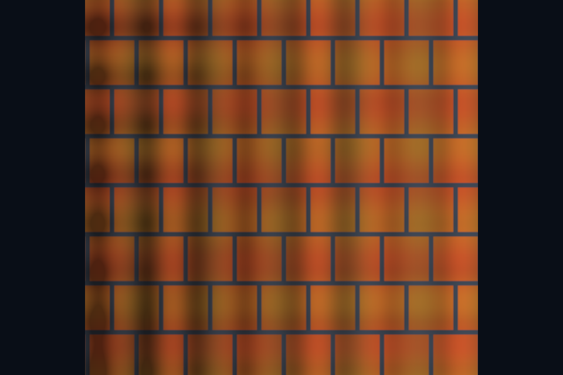

第 19 课：法线贴图与 TBN
课程首页 · 上一课 · 下一课
目标与运行
cmake --preset opengl
cmake --build --preset opengl-debug --target 19_normal_mapping --parallel 4
.\OpenGL\build\bin\Debug\19_normal_mapping.exe
预期画面：平面上的橙色纹理产生细小明暗凹凸；按住空格关闭法线贴图。
相机：W/A/S/D 移动，Q/E 升降，按住右键转向，Esc 退出。
代码阅读顺序
shaders/surface.frag 的 tangentFrame → normalMap 解码
从本课 main.cpp 进入；公共工具在 common，GLSL 在 shaders。先画出每一遍读什么、写什么，再逐个展开辅助类。
原理与实现
法线贴图不改变位置和轮廓，只替换光照使用的表面法线。图片 RGB 存切线空间方向，采样后乘 2 再减 1。中性法线接近 (0.5,0.5,1)，表示朝表面外侧。它是方向数据，必须按线性纹理读取，不能用 sRGB 解码。
TBN 的三列分别是 tangent、bitangent、normal，把切线空间方向转到世界空间。此课通过 dFdx/dFdy 的位置和 UV 梯度计算切线，并正交化 T。B 的符号根据原始 bitangent 与 cross(N,T) 的点积恢复，不能只用屏幕 UV 行列式的符号，否则换观察方向时可能翻转。
UV 退化时导数无法形成有效基，代码给出垂直 N 的备用基；它只能避免数值崩溃，不能恢复错误 UV 的正确外观。更通用的产品模型可以导入预计算切线，保留 tangent.w 的手性，并保证与烘焙工具的切线基一致。
GL 约定的法线贴图通常把 +Y 编到绿色增加方向，其他工具可能使用相反约定。凹凸颠倒时先检查绿色通道，而不是随意反转整个法线。基底方向与纹理内容必须匹配。
修改练习
把法线图换成纯中性蓝；反转绿色通道；让平面绕 Y 旋转并观察凹凸是否稳定。
修改后重新执行 cmake --build --preset opengl-debug --target 19_normal_mapping --parallel 4。GLSL、模型、图片会复制到程序旁的 shaders/assets 目录。源文件应修改教程根目录下的版本，运行目录的副本会被下一次构建覆盖。
自测与参考答案
法线贴图能让侧面轮廓变成锯齿吗？
不能，它没有增加几何或改变顶点位置。
检查与排错
运行 19_normal_mapping.exe --smoke 可执行确定时间的四帧渲染检查。重要技术开关还可用 --smoke --variant --capture 与默认抓图对比。共享工具会检查 GL 错误、非背景像素和图像动态范围，但这不能代替人工核对技术含义。参见 进阶排错。
参考截图
以下为课程自带素材、固定时间 1 秒时的实际渲染；你的相机与操作改变后画面会不同。

查看按住空格时的对照图
深入学习：数据、接口与执行
法线贴图保存切线空间方向，先从 0..1 解码到 -1..1，再经 TBN 转入光照空间。它是线性数据；粗糙网格法线与贴图法线的空间不能直接混合。
配套精讲：三 API 对照 · 直接光 PBR 与 IBL。先读概念与参数选择，再返回本课实现核对，不必一次展开所有公共类。
本课的真实源码切片
来自 OpenGL/lessons/19_normal_mapping/main.cpp，第 5—30 行；这是现有实现的局部摘录，末尾可能处于函数中间，不是可单独编译的完整程序。
int main(int argc, char** argv) try {
App app(argc, argv, "19_normal_mapping - OpenGL Course");
Shader shader(app, "advanced.vert", "surface.frag");
Mesh plane(quad(), quadIndices());
Camera camera;
camera.pos = {0, 0, 3};
camera.pitch = 0;
ImageTexture albedo(asset(app, "textures/albedo.png"), true),
normal(asset(app, "textures/normal.png")), height(asset(app, "textures/height.png"));
glEnable(GL_DEPTH_TEST);
while (app.begin()) {
camera.update(app);
app.clear();
shader.use();
surfaceDefaults(shader);
cameraUniforms(shader, app, camera);
albedo.bind(0);
normal.bind(1);
height.bind(2);
shader.set("useTexture", 1);
shader.set("baseColor", glm::vec3(1));
shader.set("useNormal", app.key(GLFW_KEY_SPACE) != GLFW_PRESS);
shader.set("useParallax", 0);
shader.set("model", glm::scale(glm::mat4(1), glm::vec3(2)));
plane.draw();
app.end();
同主题跨 API 导航
以下是同主题参考；场景、功能完成度和版本基线可能不同，具体边界见对照章节。
先预测，再验证
使用 sRGB 解码法线纹理会产生什么问题？
参考推导：方向分量被非线性改写，归一化也无法恢复原方向。应先修正格式，再检查切线基和 handedness。
在一次实验中只改一个因素，记录预测、实际画面/日志和原因。检查已有 smoke 是否仍通过；图形调试器里再核对本次 draw 的实际输入/输出，不能仅凭进程正常退出下结论。